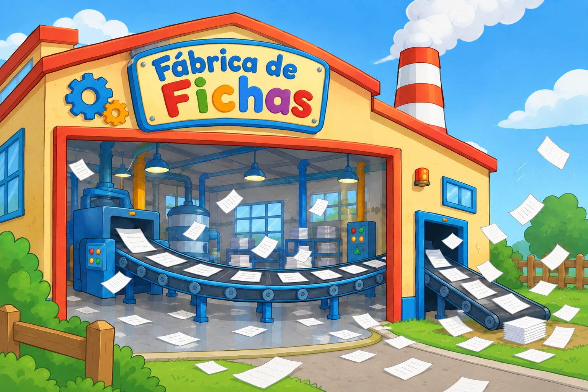
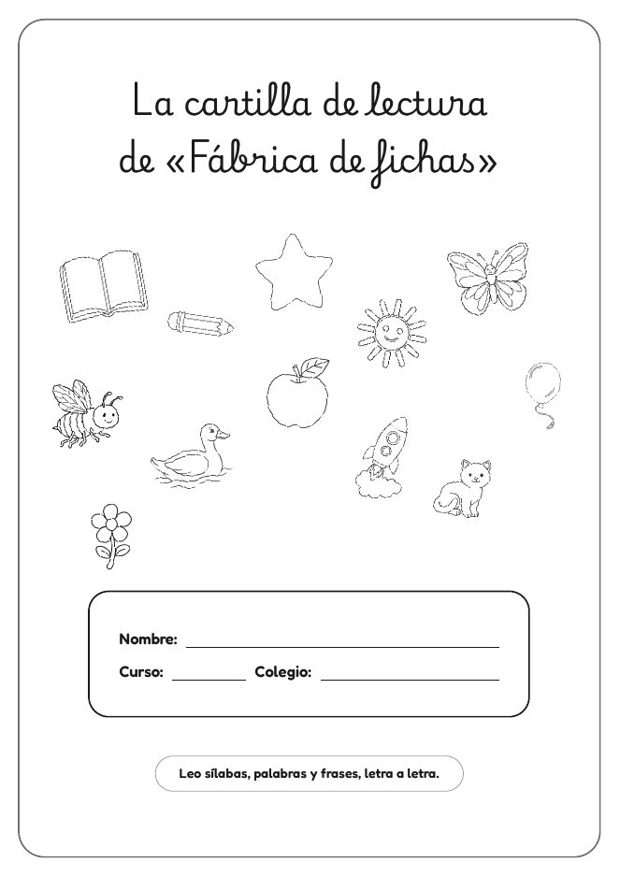
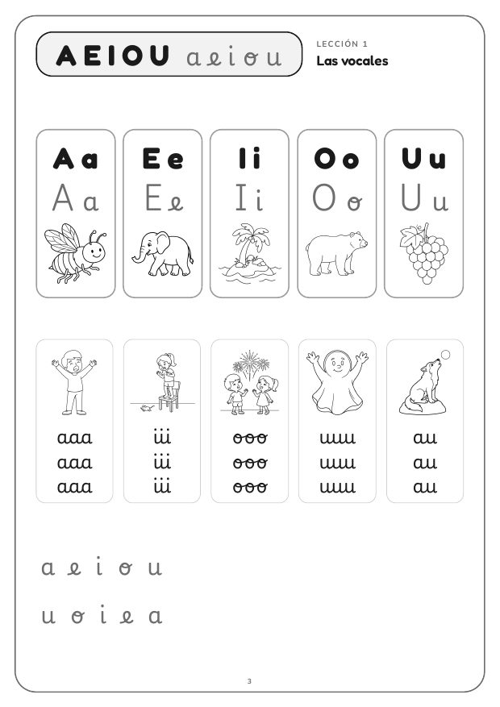
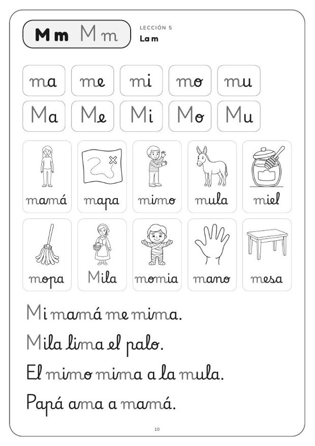
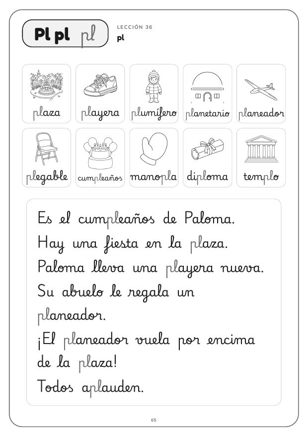
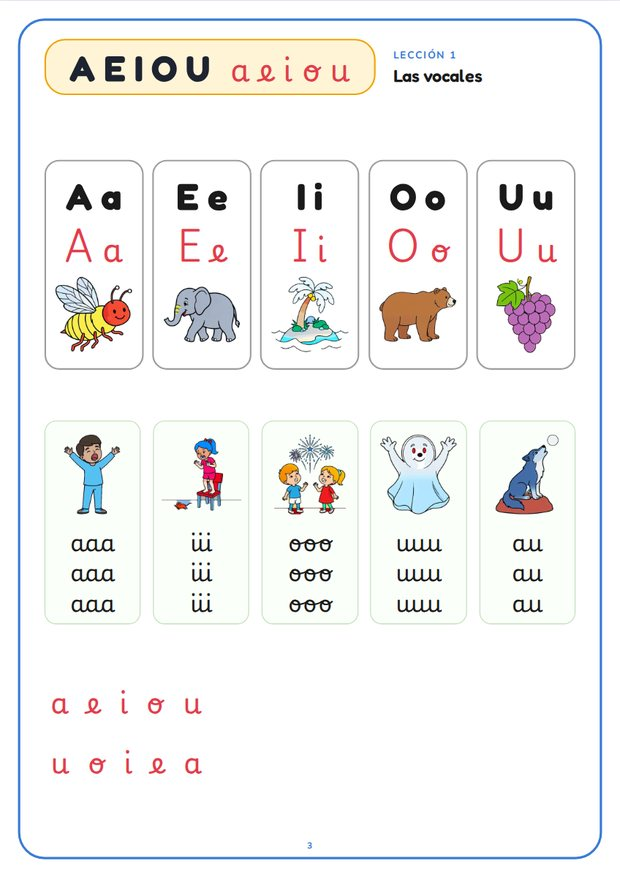
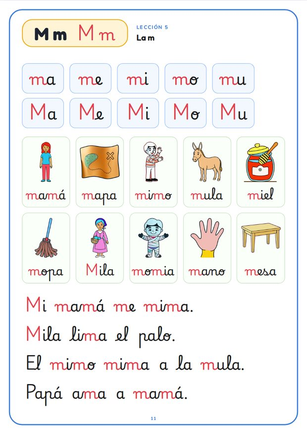
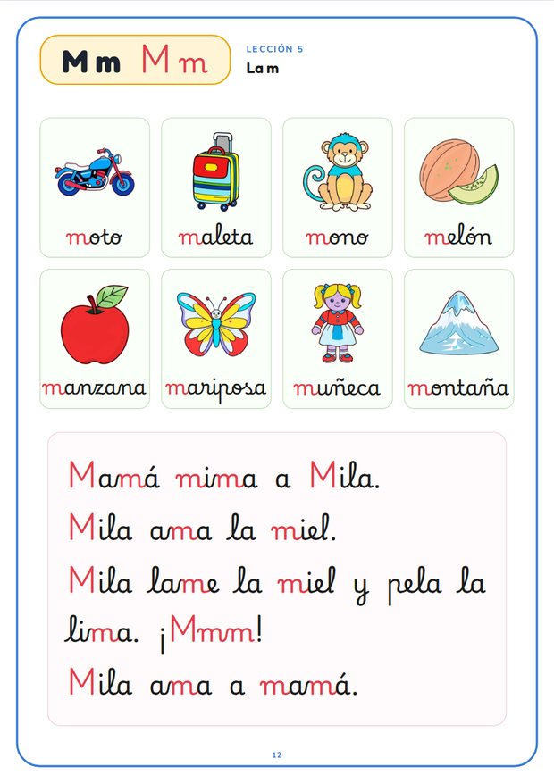
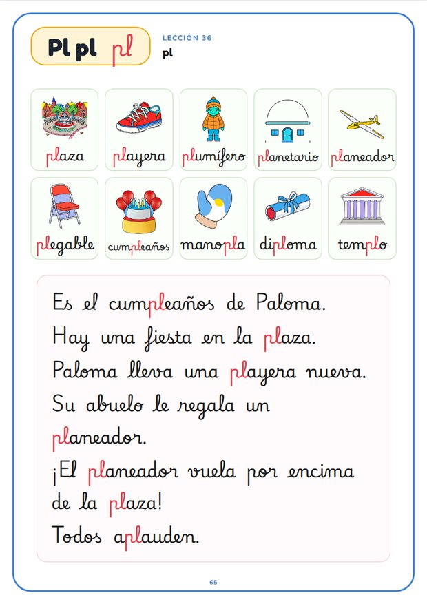

Muy pronto, un generador de fichas
Estamos preparando una herramienta para crear fichas de Lengua y Matemáticas a medida para cada clase. Esta cartilla es lo primero que sale de la fábrica.
- De 1.º a 6.º de Educación Primaria
- Referenciadas a la LOMLOE
- Listas en un par de minutos
- Decenas de tipos de ejercicios
La cartilla de lectura de «Fábrica de fichas»
De las vocales a las trabadas, letra a letra. Cada lección tiene sílabas, dibujos para leer y frases escritas solo con las letras que el niño ya conoce.
Los PDF: A4, blanco y negro, pensados para fotocopiar. Esta página tiene siempre la última versión.
El orden de las lecciones
Con borde discontinuo, las páginas de sílabas inversas; en azul, las trabadas.
Qué hay dentro
Más de 700 dibujos hechos para la cartilla, en línea clara para que se vean bien en fotocopia. Cada letra ocupa dos páginas: en la primera, sílabas, dibujos y frases; en la segunda, más dibujos y una pequeña historia.




Y en la versión interactiva, a color
Las mismas páginas y los mismos dibujos, coloreados. Al tocar una sílaba, un dibujo o una frase, se oye.




Cómo usarla
En papel
- Imprímela entera o solo la lección del día.
- Está en blanco y negro, sin grises, para que la fotocopiadora no la cobre como copia en color.
Versión interactiva
- Las mismas páginas, a color, para que el niño reconozca en pantalla lo que tiene en papel.
- Al tocar un dibujo o una frase, se lee en voz alta sílaba a sílaba.
- Para el móvil, una tablet, un ordenador o la pizarra digital de clase, desde el navegador.
Úsala, imprímela y compártela
Puedes copiar, imprimir y repartir la cartilla libremente citando a «Fábrica de fichas». No se permite venderla ni usarla con fines comerciales, ni repartir versiones modificadas.
Licencia Creative Commons Reconocimiento-NoComercial-SinObraDerivada 4.0 Internacional.